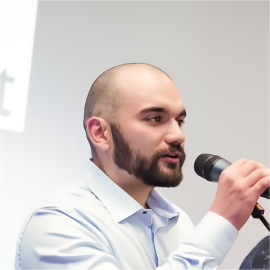

Kaloyan Krastev
Software developer from Bulgaria. I build internal software for a sheet-metal fabrication company, and a fleet of self-hosted tools for myself.
software development
self-hosted tools
hardware & 3d fabrication